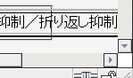

折り返しを抑制（white-space: nowrap;）した内容物が存在するなどの理由でテーブルが横方向にはみ出すような場合でも横スクロールバーが表示されない場合がある。
<table border="2"><tr> <td style="white-space:nowrap;">折り返し抑制／……</td> <td style="white-space:nowrap;">折り返し抑制／……</td> <td style="white-space:nowrap;">折り返し抑制／……</td> </tr></table>
| 折り返し抑制／折り返し抑制／折り返し抑制 | 折り返し抑制／折り返し抑制／折り返し抑制 | 折り返し抑制／折り返し抑制／折り返し抑制 |
td要素内は折り返しが行われません。テーブルが閲覧領域をはみ出す状態で横スクロールバーが表示されるか確認してください。テーブルが閲覧領域をはみ出していないときはウィンドウの幅を狭くしてください。
Moz1.0.2での表示（標準モード）
Moz1.0.2では標準・互換モードともに不具合の発生は確認されませんでした。